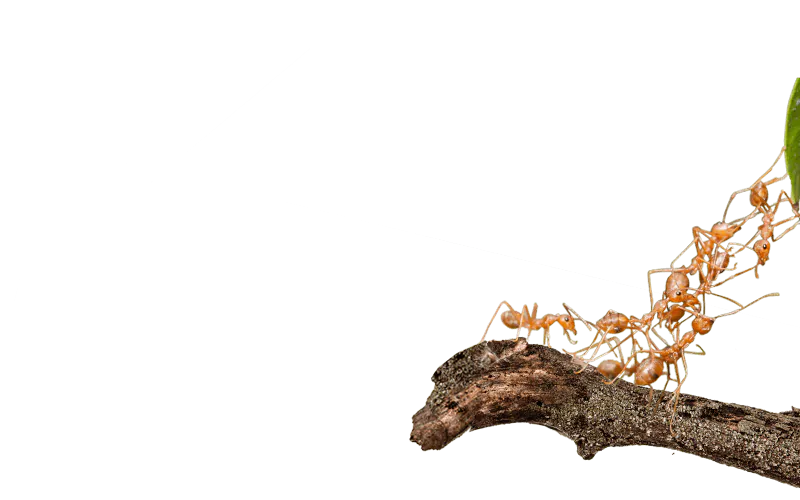
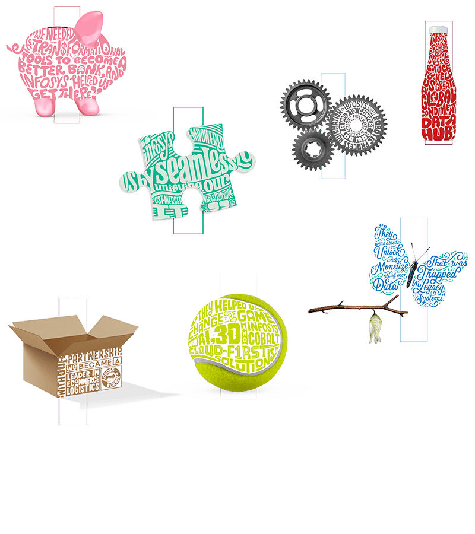

Tales of
Transformation
Inspiring glimpses into how our clients are navigating their next with Infosys.
READ MOREEmpowering Talent
Transformations
Embrace the talent revolution to remain relevant in the future.
READ MORE

Navigating New
Possibilities
Celebrating everyday stories of everyday champions achieving the intangible.
READ MORE